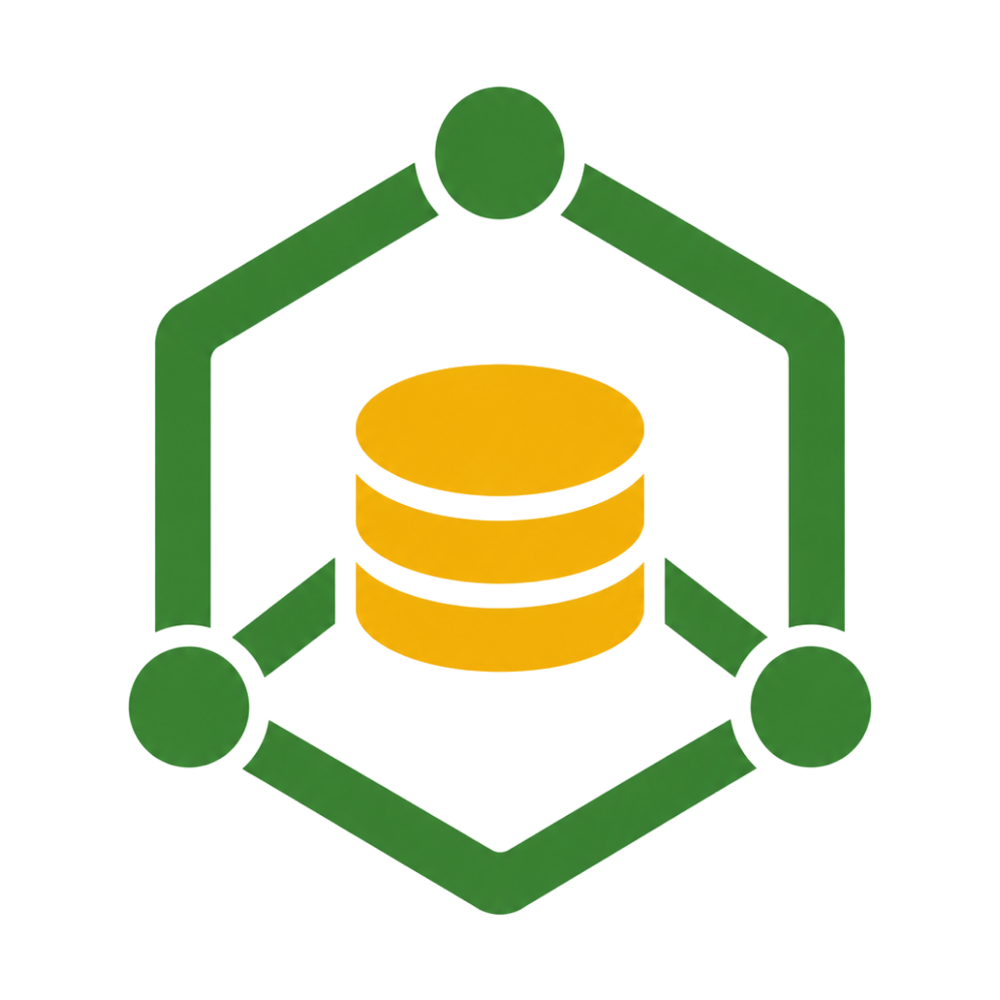
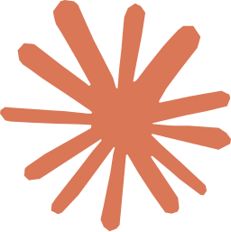
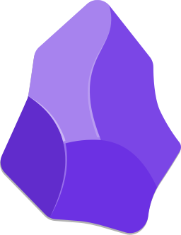

Da governança de acessos à criação real de materiais no SAP: os marcos que transformaram o CDM em uma central de solicitações de ponta a ponta.


{{ m.texto }}
O desenvolvimento do CDM segue em andamento — novos marcos serão adicionados a esta linha do tempo.